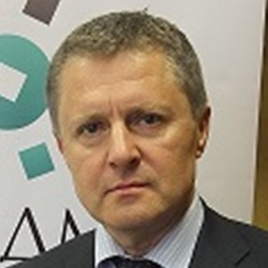
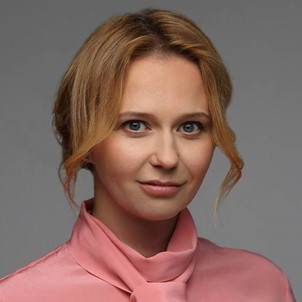
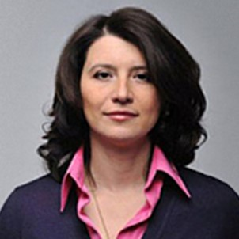

Вербицкий Владимир Константинович
Первый заместитель директора Российского института директоров, Председатель Коллегии Национального реестра профессиональных корпоративных директоров

Гоголь Александр Амурович
Председатель Правления СРО "Национальная ассоциация корпоративных директоров"
Евтихиева Наталья Андреевна
Генеральный директор Российской ассоциации бизнес образования

Елисеев Сергей Валерьевич
Президент Союза независимых экспертов и интерим менеджеров

Емельянова Юлия Викторовна
Заместитель генерального директора «Нексиа Пачоли»

Жильцов Владимир Анатольевич
Директор АНО «Национальный центр сертификации управляющих»

Минеева Татьяна Вадимовна
Вице-президент общероссийской общественной организации «Деловая Россия», к.э.н.

Михнюк Сергей Павлович
Член Научно-консультативного совета Общественной палаты Российской Федерации

Олифирова Татьяна Валерьевна
Председатель Клуба независимых директоров СКОЛКОВО
Федотов Владислав Евгеньевич
Директор, член Правления Ассоциации «Профессиональное сообщество директоров «Директориум»